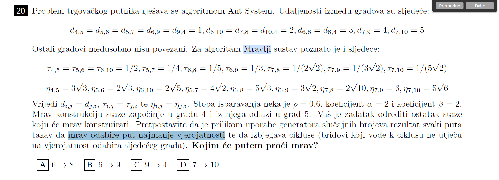
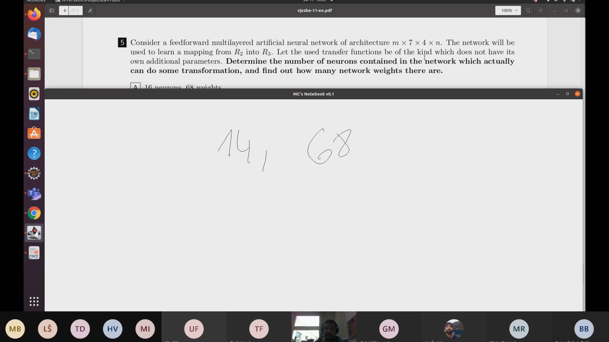
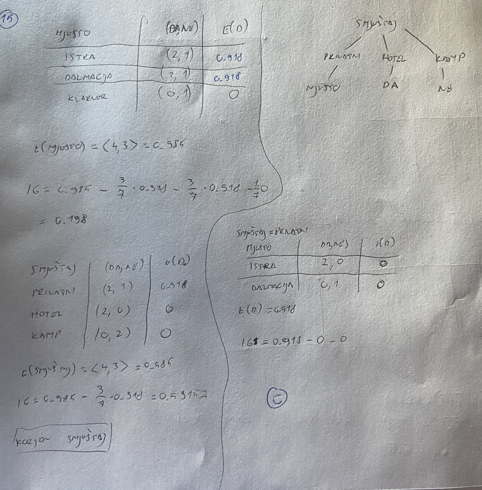

Jel ima netko snimku modeliranja neizvjesnosti sa teamsa ?
jel ima di kakvih zadataka, ko za meduispit ono na moodle ili tako nesto, za zavrsni ?
𝐓𝐇𝐄 𝐒𝐄𝐂𝐑𝐄𝐓 - 𝐂𝐋𝐔𝐁 objavljen je ZI od prošle godine.
Ima neko postupke za zadatke 17-20 sa proslogodisnjeg ZI-a?
 Je li netko rješavao ovaj zadatak? Točan odgovor je A. Kad računam, meni vjerojatnost P_5,_6 ispada 0.6, a P_5,_7 onda 0.4. Što znači da bi trebalo ići u 7, jer odabire put najmanje vjerojatnosti ? Uglavnom, ne mogu dobiti točan odgovor.
Pleteni miš Točno. Zatim će iz 7 otići u 9, iz 9 u 6, i iz 6 u 8. Zato je odgovor A.
 jel itko zna kako ovog rijesit, Cupic kaze da je rijesio tako da je nacrtao
VolimStopala🇻🇦🇭🇷 Pogledaj cijeli zadatak od pocetka, lijepo prokomentira zasto je tako
VolimStopala🇻🇦🇭🇷 posto ti mreza preslikava iz R2 u R3 znaci da imas 2 ulaza i 3 izlaza, odnosno mreza je formata 2×7×4×3. za pocetak te pita kolko neurona radi nekakvu transformaciju a to je zapravo “broj neurona - broj ulaza” jer ova 2 ulaza ne rade nikakvu transformaciju, to ti onda ispadne 2+7+4+3 - 2 = 14. drugi dio pitanja pita te kolko ima sve skupa tezina, tu brojis tezine plus biase i to izgleda ovak: prvi sloj 27 tezina plus 7 biasa, drugi sloj 74 tezina plus 4 biasa, treci sloj 4*3 tezina plus 3 biasa i kad to sve posumiras dobijes 68.
VolimStopala🇻🇦🇭🇷 Koji je to video?
login hmm ovaj zadnji dio mi se nekak uspio crashat haha, fali puta izmedju: prvi sloj 2 * 7 tezina plus 7 biasa, drugi sloj 7 * 4 tezina plus 4 biasa, treci sloj 4 * 3 tezina plus 3 biasa i kad to sve posumiras dobijes 68.
login probaj ispred * koristiti \ za ubuduće :D
Ima netko postupak od 15. zadatka ?
~~~~~~~~ ovako sam ja to. imas postupak na prezi Strojno učenje/Stabla odluke 